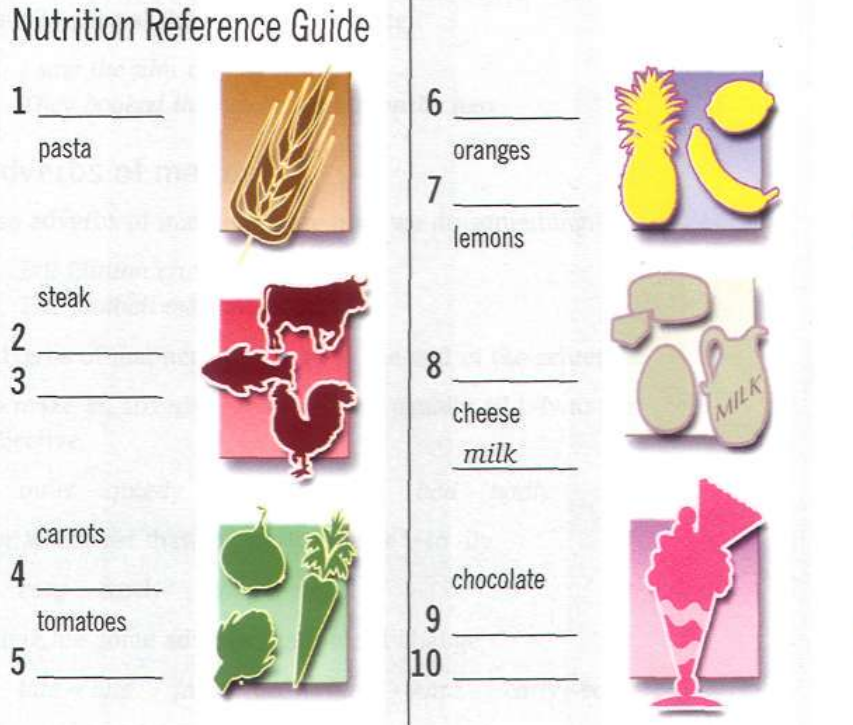

Miracle diet?
Today we will
- talk about food and drinks
- learn to use the words some, any
vocabulary: food
Look at the pictures
Which of the foods do you like? Do you like these foods?


Complete the information for the Nutrition Reference Guide with words
Work in pairs. Find out what food your partner likes. Ask questions.
Do yon like pasta?
Yes, I do.
Do you like eggs?
No, I don't.
Read the extract from a TV magazine. What is the show about?
What three diets does Daniel talk about? Underline the correct name.
Diet 1: The Two Fs diet / The Two Ss diet
Diet 2: The High C diet / The Low C diet
Diet 3: The Soup diet / The Fish diet
Listen again. Complete Daniel Barber's notes. Underline the correct word in Daniel Barber's notes

What do you think? Are these good diets? Do you know any miracle diets?
grammar
Countable / Uncountable nouns
Исчисляемые/неисчисляемые существительные
Исчисляемые существительные (e.g. an orange, two oranges etc.) имеют форму единственного и множественного числа: a notebook, three notebooks.
Неисчисляемые существительные не имеют формы множественного числа. К ним относятся:
Еда: cheese, sugar, butter, salt, rice, flour
Жидкости: water, coffee, tea, milk, tomato juice, lemonade, olive oil

Underline the correct word in the sentences.
I had some coffee / coffees for breakfast
I don't have any / some beer at home.
I like a French bread / French bread.
I have an / any orange in my bag.
I ate some pastas / pasta yesterday.
Daniel Barber Interviewed Susan Jeffreys about her experience with the Two Fs diet. Complete the dialogue with some or any.
Daniel: So, did the diet work for you?
Susan: No. it didn't. Every morning I had three apples, two bananas and (l)_______water for breakfast. I didn't eat (2)_______bread or drink (3)_______ coffee or tea. I was tired all day!
Daniel: What else did you eat? Did you eat (4)_______fish?
Susan: Yes. I did. On Monday I ate (5)_______ fish. On Tuesday I ate (6)_______fish. On Wednesday I ate (7)_______tomato salad but I didn't eat (8) _______fish. On Thursday I ate (9)_______fish again, with tomatoes.
Daniel: Did you eat (10)_______meat, or vegetables?
Susan: No. I didn't. Only fish, fish, fish! At the end of the week I was tired of it!
Daniel: What do you think of the Two Fs diet?
Susan: I didn't lose one kilogram! It's an awful diet!
much / many / a lot of
В утвердительных предложениях с исчисляемыми существительными во множественном числе может употребляться many, а с неисчисляемыми существительными much.
He's got many shoes.
There's much butter in the fridge.
В вопросительных и отрицательных предложениях употребляются much и many.
How much sugar have you got?
There are not many desks in the classroom.
Work In pairs. Invent your own 'miracle diet'.
Make a list of foods you can eat and a list of foods you can't eat. Give a name to your diet.
Work with another pair. Talk about your diet. Ask questions about the other diet.
Now I can
- Can you talk about food and drinks?
- Can you use use some, any?
- Photo by Trường Trung Cấp Kinh Tế Du Lịch Thành Phố Hồ Chí Minh CET on Unsplash
- Photo by Dan Gold on Unsplash
- Photo by Rachel Park on Unsplash
- Photo by Nas Mato on Unsplash
- Photo by Christian Bowen on Unsplash
- Photo by Juan Gomez on Unsplash
- Photo by SwapnIl Dwivedi on Unsplash
- Photo by José Ignacio Pompé on Unsplash
- Photo by Jan Kaluza on Unsplash
- Photo by Camille Brodard on Unsplash
- Photo by Arek Adeoye on Unsplash
- Photo by Tim Bish on Unsplash
- Photo by Eaters Collective on Unsplash
- Photo by Pille-Riin Priske on Unsplash
- Photo by Isara Somboon on Unsplash
- Photo by Tengyart on Unsplash
- Photo by Phil Hearing on Unsplash
- Photo by Brenda Godinez on Unsplash
- Photo by Sven Scheuermeier on Unsplash
- Photo by Mae Mu on Unsplash
- Photo by Boxed Water Is Better on Unsplash
- Photo by joah brown on Unsplash
- Photo by Mick Haupt on Unsplash
- Photo by Marina Zaharkina on Unsplash
- Photo by Samantha Gades on Unsplash
- Photo by Noahs Knight on Unsplash
- Photo by Ella Olsson on Unsplash